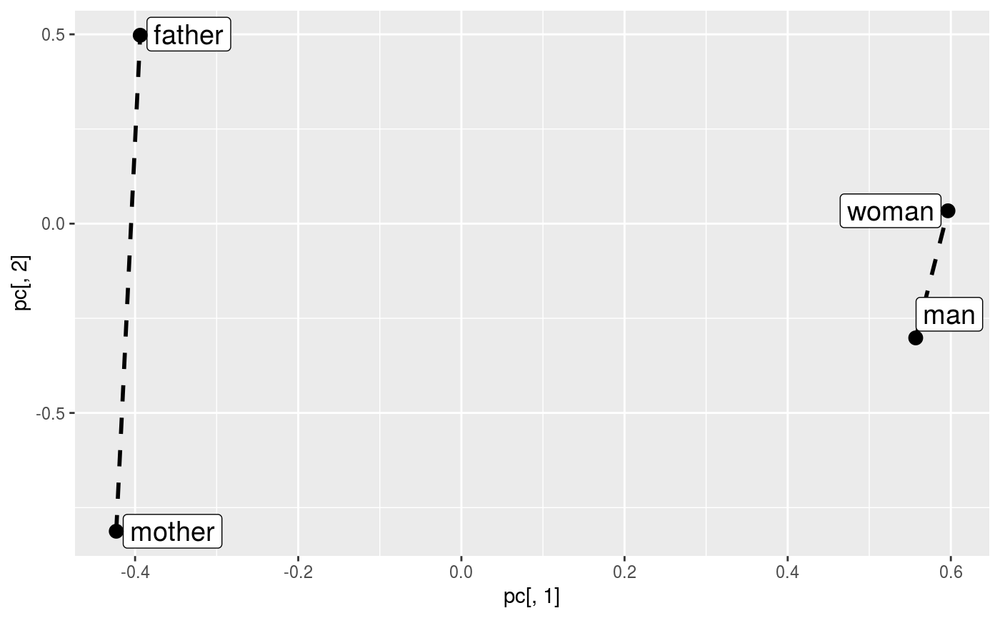

Visualize Term Analogies
visualize_analogies.RdVisualize analogies for given terms. A visualization of embeddings is
two main components from PCA plotted by ggplot on the 2D plane.
Additionally, the terms from each given pair are
connected to one another. If the embeddings are of good quality, the connection
lines should be almost parallel to each other. If find_analogies = TRUE
only the pairs with at least one solved analogy task are plotted.
visualize_analogies(term_vectors, terms, find_analogies = FALSE, n = 5L, save = FALSE, path_to_save)
Arguments
| term_vectors | A matrix of embeddings of terms |
|---|---|
| terms | A list of two character vectors: the first and the second elements of analogy pairs |
| find_analogies | A logical indicating if the term analogy task should be performed before the plotting (default: FALSE) |
| n | An optional number of neighbors included in analogies (default: 5),
needed only if |
| save | A logical indicating if the plot should be saved to the file |
| path_to_save | An optional string of the path to the target PDF file |
Value
A generated plot of embeddings.
Examples
#> INFO [2020-05-29 09:12:07] 2020-05-29 09:12:07 - epoch 1, expected cost 0.1059 #> INFO [2020-05-29 09:12:07] 2020-05-29 09:12:07 - epoch 2, expected cost 0.0510 #> INFO [2020-05-29 09:12:07] 2020-05-29 09:12:07 - epoch 3, expected cost 0.0315 #> INFO [2020-05-29 09:12:07] 2020-05-29 09:12:07 - epoch 4, expected cost 0.0225 #> INFO [2020-05-29 09:12:07] 2020-05-29 09:12:07 - epoch 5, expected cost 0.0178 #> INFO [2020-05-29 09:12:07] 2020-05-29 09:12:07 - epoch 6, expected cost 0.0149 #> INFO [2020-05-29 09:12:07] 2020-05-29 09:12:07 - epoch 7, expected cost 0.0131 #> INFO [2020-05-29 09:12:07] 2020-05-29 09:12:07 - epoch 8, expected cost 0.0117 #> INFO [2020-05-29 09:12:07] 2020-05-29 09:12:07 - epoch 9, expected cost 0.0107 #> INFO [2020-05-29 09:12:07] 2020-05-29 09:12:07 - epoch 10, expected cost 0.0099 #> INFO [2020-05-29 09:12:07] 2020-05-29 09:12:07 - epoch 11, expected cost 0.0093 #> INFO [2020-05-29 09:12:07] 2020-05-29 09:12:07 - epoch 12, expected cost 0.0087 #> INFO [2020-05-29 09:12:07] 2020-05-29 09:12:07 - epoch 13, expected cost 0.0082 #> INFO [2020-05-29 09:12:07] 2020-05-29 09:12:07 - epoch 14, expected cost 0.0078 #> INFO [2020-05-29 09:12:07] 2020-05-29 09:12:07 - epoch 15, expected cost 0.0074visualize_analogies(term_vectors, terms_pairs_test$person)visualize_analogies(term_vectors, terms_pairs_test$person, find_analogies = TRUE, n = 10)